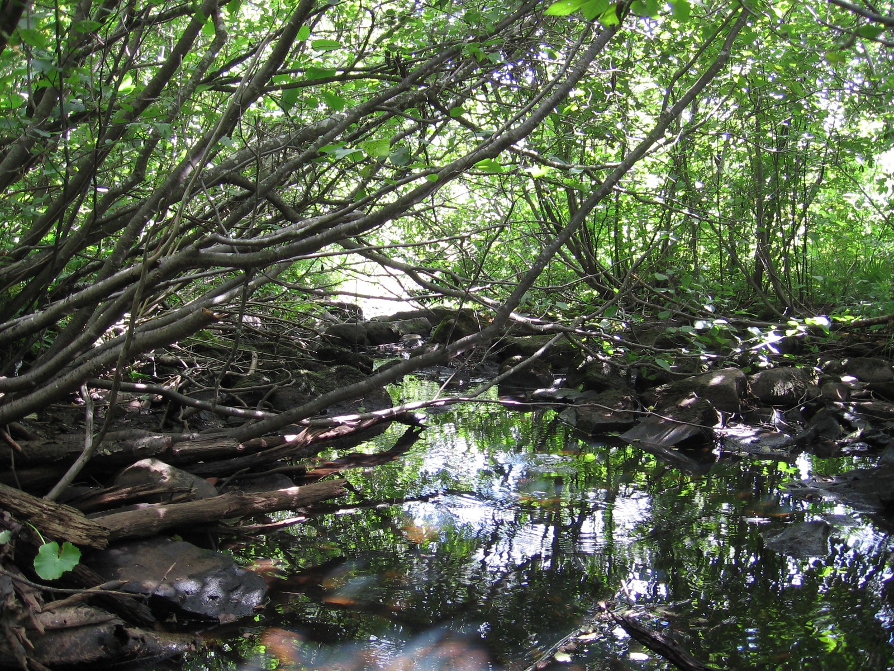

The directory/Fond du Lac Band of Lake Superior Chippewa

Cloquet-area tributary of the St. Louis River, 2007 — regional watershed contextMinnecologies, 2007-08-25 (Commons description; EXIF records 2007-08-22). Via Wikimedia Commons, CC BY 3.0.
Tribal government / contemporary community · Added to the original list
Fond du Lac Band of Lake Superior Chippewa
The Fond du Lac Band of Lake Superior Chippewa is a distinct Ojibwe government in Minnesota. Two community publications offer a focused introduction through Ojibwemowin and food sovereignty. The Band’s language statement explains its institutional commitment to language, while its Food Sovereignty Assessment 2019–2022 connects food access, gardens and community education. Together they introduce community priorities within clearly dated and limited sources.
See each region’s evidence for historical or present-day scope.
Homeland / region
Minnesota
Research depth
Source guide
Source collection
2 annotated resources · 2 Indigenous-led
Inspected sources
2 substantive works · selected content reviewed
Initial adequacy
Adequate initial introduction
Source review
October 27, 2026
Names & relationshipsMnDOT explicitly places this individual Minnesota government under its Ojibwe Tribal Nation grouping. It remains a separate government; the broader Ojibwe directory route is related reading, not a substitute identity.
A source guide for a deeper dive.This entry provides a brief orientation and an organized reading path. A comprehensive deep dive has not yet been completed. Follow the annotated sources and distinguish primary community accounts from outside reference material.
Adequate initial introduction
Useful within the disclosed source and image scopes as a starting profile; no fixed source minimum or comprehensive completion claim.
Assessment recorded October 27, 2026. This is separate from research completion and community review.
Add a direct Band public-history account and inspect primary treaty records; this starting profile concentrates on language and food sovereignty.
Inspect selected public language lessons or videos and identify their teachers, intended audience and reuse terms.
Check current Gitigaaning and language-program operations through dated community publications.
The selected photograph supplies explicitly labeled regional watershed context; an exact Band institution or reservation landscape image with reusable rights remains desirable.
Backdrop photographs & credits
These photographs have individual, documented connections to this entry. Their captions and source records define the people, place, object, and period shown; no one photograph represents every community within a broader label.
Cloquet-area tributary of the St. Louis River, 2007 — regional watershed context Minnecologies, 2007-08-25 (Commons description; EXIF records 2007-08-22). Via Wikimedia Commons, CC BY 3.0.
Regional watershed context only. The photographer identifies a St. Louis River tributary at Cloquet; the particular tributary, reservation ownership and exact camera site are not established. The Band’s 2018 letter places its reservation in the same basin and describes the St. Louis River entering the reservation. Do not caption this as Band-owned land, a named reservation site, Gitigaaning, a wild-rice lake or a documented site of cultural practice. A closer exact-community photograph remains an explicit gap. Complete delivered frame retained. Opened-page image should display proportionally; any directory/backdrop CSS crop or overlay is presentation treatment and must not become an altered archival claim. Derivatives remain subject to the stated photo license; no endorsement implied.
Image, association, and reuse record reviewed 2026-10-27.
Full photographs are displayed proportionally above. A translucent background copy may be cropped by the viewport; it does not replace the complete image or its record.
The visual treatment does not change the research status, evidence, or remaining gaps recorded in this profile.
Start reading here
A community-specific starting profile assembled from selected actual-content sources, retaining their earlier inspection dates and exact scopes. The wider Ojibwe profile is related reading, not a substitute government or a claim of equal coverage.
Read the selected assessment pages for food access, gardens and community education, alongside its survey-method limits.
These are selected starting points. The full annotated collection, source perspectives, inspection limits and remaining research questions follow below. A starting guide is not an exhaustive history or community endorsement.
01
Ojibwemowin and cultural continuity
The Band’s language statement records its 2010 resolution making Ojibwe its official language and the creation of a language program in 2015. It places learning goals within an account of cultural continuity and the effects of historical schooling. This is the Band’s own explanation of why language work matters. It gives a useful starting vocabulary for further reading, but its institutional dates do not establish current speaker numbers, present class schedules or learning outcomes. Linked lessons and videos require their own inspection.
The Band’s assessment describes Gitigaaning as a community farm and training site, with demonstration gardens and a kitchen/cannery. Its survey ran from December 2018 to May 2019 and received 342 responses; most analysis used 223 responses from Band members, descendants or elders, while some questions included broader groups. Participation was voluntary through online and paper forms. The report expressly limits representativeness, so its findings should stay tied to those respondents and that period. Its program descriptions are useful reading about food sovereignty and education; they do not establish present operations or demonstrate outcomes for every Band member.
Add a direct Band public-history account and inspect primary treaty records; this starting profile concentrates on language and food sovereignty.
Inspect selected public language lessons or videos and identify their teachers, intended audience and reuse terms.
Check current Gitigaaning and language-program operations through dated community publications.
The selected photograph supplies explicitly labeled regional watershed context; an exact Band institution or reservation landscape image with reusable rights remains desirable.
A community-specific starting guide reuses selected earlier actual-content reviews with their original dates/scopes. It does not add new global works merely because a URL appears on this route. Picture identification/rights are separate from historical adequacy or community endorsement.
Follow the reading path
Sources & further reading
Open any title to read the original source. Annotations explain what each link can help you explore.
No Indigenous-led source is identified in this entry yet. This is a gap in this collection, and does not imply an absence of community knowledge or organization.
Indigenous-ledFond du Lac Band of Lake Superior ChippewaSource 1
Publication: Undated page; language resolution dated 2010 and program history dated 2015
Fond du Lac describes Ojibwemowin’s role in its community, cites the Band’s 2010 resolution naming Ojibwe its official language and its 2015 language-program creation. First-person language about cultural continuity and historical schooling remains attributed to the Band; this is not a current language-speaker count.
Inspection: Content reviewed for the stated scope
Scope: Read the complete visible language-history statement (lines 17–30), including the 2010 resolution, 2015 program and learning goals. Linked teaching materials and videos were not opened.
A dated community assessment linking food access and gardening education. Its voluntary survey is a bounded community snapshot, not a representative measurement of every Band member or all Ojibwe peoples. Read the program descriptions alongside the methodology; present operations and outcomes were not verified.
Inspection: Content reviewed for the stated scope
Scope: Searchable text of printed pp.5–8,16–20,22–31 reviewed on October 23, 2026. Page images, maps and charts were not visually inspected. Medical claims, eligibility advice and numerical chart labels are excluded from synthesis; no image is reproduced.
Related entries may represent alternate names, constituent communities, wider groupings, or historical connections. Read the naming notes before treating entries as equivalent.
Robey’s Atlas of Indigenous North America · Compiled October 19, 2026 · Fond du Lac Band of Lake Superior Chippewa